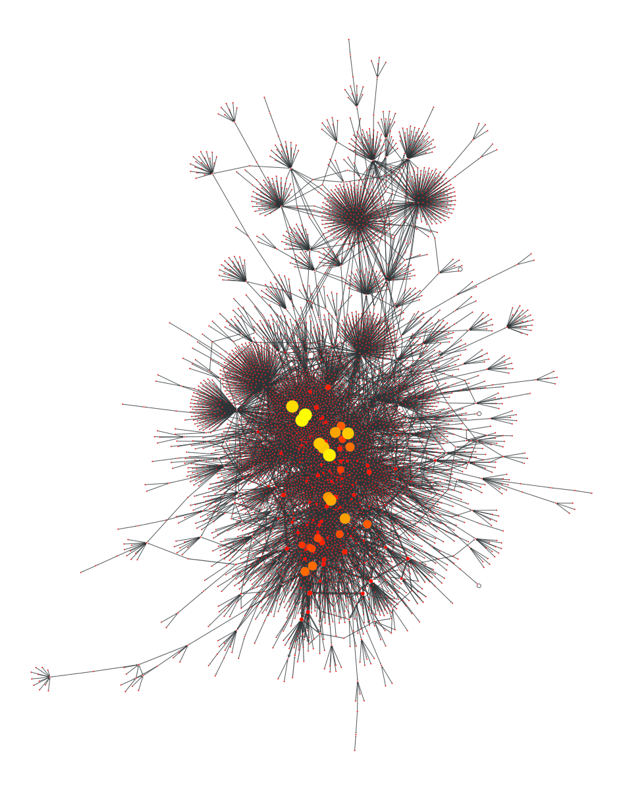

First, let’s define some helper functions to be used later.
Code
import jsonimport reimport numpy as npimport pandas as pddef extract_missing_usernames(df, username_column): pattern =r"RT @([A-Za-z0-9_]+):" usernames = []for index, row in df.iterrows(): match = re.search(pattern, row["retweet_text"])if match: usernames.append(match.group(1))else: usernames.append(row[username_column]) df[username_column] = usernamesreturn dfdef get_time_range(df):"""Get the time range of the DataFrame Parameters ---------- df : pandas.DataFrame DataFrame to be queried date_lang : str, optional Language of the date, by default "de_DE" Returns ------- str Start date of the DataFrame str End date of the DataFrame """ df.retweet_created_at = df.retweet_created_at.astype("datetime64[ns, UTC]") start_date = df.retweet_created_at.min().strftime("%B %e, %Y") end_date = df.retweet_created_at.max().strftime("%B %e, %Y")return start_date, end_datedef get_largest_values(df, col_name, n):"""Get the n largest values of a column in a DataFrame Parameters ---------- df : pandas.DataFrame DataFrame to be queried col_name : str Name of the column to be queried n : int Number of largest values to be returned (i.e. number of rows) Returns ------- pandas.DataFrame DataFrame with the n largest values of the column """ top = df.sort_values(col_name, ascending=False).head(n)# put col_name as first column cols = top.columns.tolist() cols = cols[-1:] + cols[:-1] top = top[cols]return topdef get_top_users(df, df_authors, column_name, n):"""Get the top n users with their profiles based on a column in a DataFrame Values of the column are standardized so that the largest value is 1.0 Parameters ---------- df : pandas.DataFrame DataFrame to be queried df_authors : pandas.DataFrame DataFrame with the usernames and names of authors column_name : str Name of the column to be queried n : int Number of largest values to be returned (i.e. number of rows) Returns ------- pandas.DataFrame DataFrame with the n largest values of the column """ column_name_std = column_name +" (normalised)" df[column_name_std] = df[column_name] /max(df[column_name]) df = get_largest_values(df, column_name, n) df = add_profile_url(df, "username") df = pd.merge(df, df_authors, on="username", how="left") df = df.round(5) df.index = np.arange(1, len(df) +1) df = df[[column_name, column_name_std, "username", "name", "profile_url"]]return dfdef get_authors_name(df):"""Get the usernames and names of retweet authors and tweet authors Parameters ---------- df : pandas.DataFrame DataFrame to be queried Returns ------- pandas.DataFrame DataFrame with the usernames and names of retweet authors and tweet authors """ retweet_authors = df[["retweet_author_username", "retweet_author_name"]].copy() retweet_authors.rename( columns={"retweet_author_username": "username", "retweet_author_name": "name"}, inplace=True, ) tweet_authors = df[["tweet_author_username", "tweet_author_name"]].copy() tweet_authors.rename( columns={"tweet_author_username": "username", "tweet_author_name": "name"}, inplace=True, ) authors = pd.concat([retweet_authors, tweet_authors]) authors = authors.drop_duplicates(subset=["username"], keep="last").reset_index( drop=True )return authorsdef add_profile_url(df, username_col): df["profile_url"] ="https://twitter.com/"+ df[username_col]return df
Now let’s prepare the data and print some relevant information about it.
Code
# load and clean datasetdf = pd.read_parquet("data/raw/all_tweets_lehrkraeftebildung.parquet")df.replace(["NaN", "nan", "None", ""], np.NaN, inplace=True)df = extract_missing_usernames(df, "tweet_author_username")# get information about the retweetsstart_date, end_date = get_time_range(df)search_words ="(Lehrkräftebildung OR Lehrerbildung OR Lehrkräfte OR Lehrkräftefortbildung OR Seiteneinstieg OR Quereinstieg OR Lehramt)"query_conds ="(is:retweet OR is:quote) lang:de"# drop retweets with missing usernamesold_df_len = df.shape[0]try: missing_usernames = df.tweet_author_username.isnull().value_counts()[True]exceptKeyError: missing_usernames =0df = df.dropna(subset=["tweet_author_username"])# Print info about datasetprint(f"Number of total retweets in this dataset: \n{old_df_len}")print(f"\nTime range of the retweets:\n{start_date} - {end_date}")print(f"\nKeywords* used to collect the retweets:\n{search_words}")print(f"\nQuery conditions used to collect the retweets:\n{query_conds}")print(f"\nNumber of retweets with missing usernames for the original tweeter: {missing_usernames}\nThese are being dropped from the analysis. New total of retweets: {len(df)}")
Number of total retweets in this dataset:
11027
Time range of the retweets:
Februar 23, 2023 - April 1, 2023
Keywords* used to collect the retweets:
(Lehrkräftebildung OR Lehrerbildung OR Lehrkräfte OR Lehrkräftefortbildung OR Seiteneinstieg OR Quereinstieg OR Lehramt)
Query conditions used to collect the retweets:
(is:retweet OR is:quote) lang:de
Number of retweets with missing usernames for the original tweeter: 199
These are being dropped from the analysis. New total of retweets: 10828
# subgraph of largest componentu = gt.extract_largest_component(g, directed=False) # this appears to be the wrong way to do this, because the subgraph is very small. Maybe it only selects a subgraph which is connected by in and out edges?u = gt.Graph(u, prune=True)pos = gt.sfdp_layout(u, eweight=u.edge_properties["weight"])gt.graph_draw(u, pos)

<VertexPropertyMap object with value type 'vector<double>', for Graph 0x7f56a216db10, at 0x7f56aeb74e80>